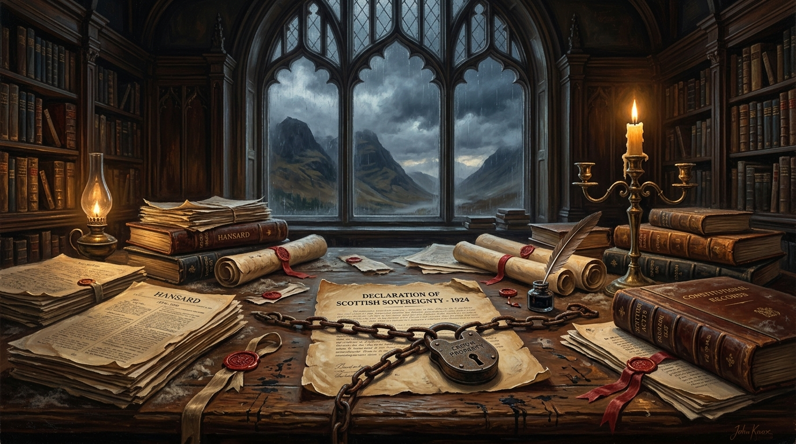

How Scotland Was Sold Out By Labour: A 50‑Year Exposé.
The documented constitutional record from the 1970 Kilbrandon Commission to Andy Burnham’s 2026 referendum veto—proving that Westminster’s promises of self-determination were published, recorded, and systematically betrayed.

“Fifty Years of Dust”
This exposé was adapted into a heavy, deliberate blues-rock anthem produced in collaboration between The Shady River Bard and Trevor Swistchew. Creeping at a somber 65 BPM with weeping distorted guitars, deep spoken Scottish verses, and soaring choruses, it laments: “The promise was a padlock, the signature a chain, you published the illusion and left us in the rain.”

The Documented 50-Year Record: Published & Betrayed
Official government submissions, memoirs, white papers, and cross-party declarations acknowledging Scotland's voluntary participation and the right to leave.
Labour’s 1970 Kilbrandon Pledge & Conservative Precedents
The principle that the UK is a voluntary association of sovereign member nations was explicitly affirmed by both major Westminster governing parties in official constitutional instruments:
For fifty years, the constitutional record of the United Kingdom has contained a clear, repeated promise: Scotland is a nation, Scotland has the right to decide its own future, and the Union exists only so long as its peoples consent to remain within it. That promise is not folklore or partisan spin. It is written into official submissions, government papers, prime ministerial statements, and cross-party declarations. Yet every time Scotland has attempted to act on that right, Westminster—under Labour as well as Conservative leadership—has blocked the path. This exposé sets out, in plain terms and with explicit sources, how that promise was made and how it was ignored.
“Scotland is not a region, it is a member nation of the United Kingdom... Should they determine on independence no English party or politician would stand in their way.”
The starting point is Labour’s own formal evidence to the Royal Commission on the Constitution, the Kilbrandon Commission, in 1970. In that submission, Labour stated: “Scotland is not a region, it is a member nation of the United Kingdom.” It went on to affirm that, “as a nation, [the Scots] have an undoubted right to national self-determination; thus far they have exercised that right by remaining in the Union. Should they determine on independence no English party or politician would stand in their way.” These sentences are reproduced verbatim in the Scottish Government paper Scotland’s Place in the United Kingdom (2022) and in the endnotes to Scotland’s Right to Choose: Putting Scotland’s Future in Scotland’s Hands (2019). They are not hearsay; they are Labour’s own words submitted as part of an official constitutional process. In them, Labour recognises Scotland as a nation and accepts that, if Scotland chooses independence, Westminster should not obstruct it.
That principle was echoed from the Conservative side. In her memoir The Downing Street Years (1993), Margaret Thatcher is quoted as saying of Scotland: “as a nation, [the Scots] have an undoubted right to national self-determination; thus far they have exercised that right by joining and remaining in the Union. Should they determine on independence no English party or politician would stand in their way.” The same wording appears in Scottish Government constitutional papers and is cited alongside Labour’s Kilbrandon submission. Thatcher’s politics on Scotland were harsh, but on the constitutional question she accepted the same core principle: Scotland is a nation, and if that nation clearly chooses independence, Westminster should not prevent it.
The idea of a voluntary Union based on consent was further reinforced in the early 1990s. John Major, then Prime Minister, is quoted in Scottish Government analysis as stating that “no nation could be held irrevocably in a Union against its will.” This line appears in the 2025 Scottish Government paper Your Right to Decide, which collates UK prime ministerial statements on self-determination. Taken together, Labour’s 1970 submission, Thatcher’s 1993 memoir, and Major’s 1993 statement form a consistent constitutional position: Scotland is a nation; nations have a right to self-determination; and no nation should be held in a union against its will.
“No nation could be held irrevocably in a Union against its will.”
On the eve of the 2014 independence referendum, that principle was restated in explicitly Scottish terms. A joint statement by the leaders of the Scottish Conservatives, Scottish Labour Party and Scottish Liberal Democrats in June 2014 declared: “Power lies with the Scottish people and we believe it is for the Scottish people to decide how we are governed.” This statement is cited in the endnotes of Scotland’s Right to Choose and in constitutional commentary. It is a direct, cross-party acknowledgement that Scotland’s constitutional future is determined by its people, not by Westminster fiat.
The UK Government itself, in a paper published before the 2014 referendum, set out the same principle. In Scotland Analysis: Devolution and the Implications of Scottish Independence (2013), the UK Government wrote: “Successive UK Governments have said that, should a majority of people in any part of the multi-national UK express a clear desire to leave it through a fair and democratic process, the UK Government would not seek to prevent that happening.” This line is quoted in both the 2019 Scotland’s Right to Choose paper and the 2025 Your Right to Decide paper. It is an explicit, written commitment that if Scotland—or any other part of the UK—votes clearly to leave in a fair process, Westminster will not block it.
In 2019, Theresa May added her own formulation of the consent principle. In a speech quoted in Scotland’s Place in the United Kingdom and Scotland’s Right to Choose, she stated: “Our Union rests on and is defined by the support of its people … it will endure as long as people want it to—for as long as it enjoys the popular support of the people of Scotland and Wales, England and Northern Ireland.” This is a clear statement that the Union is not meant to be permanent regardless of democratic will: it exists only so long as its peoples support it.
In 2025, the Scottish Government’s paper Your Right to Decide summarised this cross-party, cross-decade record bluntly: “That the people of Scotland have the right to decide Scotland’s constitutional future has been accepted across the political spectrum.” It then cites, in one place, the Labour Kilbrandon submission, Thatcher’s memoir, Major’s statement, the 2013 UK Government paper, and May’s speech as evidence of that acceptance. The pattern is not invented; it is documented by governments themselves.
“The dirt, in constitutional terms, is not that the promises were never made. It is that they were made, recorded, published, and then quietly ignored when Scotland’s democratic choices no longer suited Westminster.”
Against this backdrop, the actions of Westminster in the 2010s and 2020s stand in stark contradiction. After the 2014 referendum, successive elections to the Scottish Parliament returned pro-independence majorities. The Scottish Government sought a Section 30 order to hold a further referendum. The UK Supreme Court’s 2022 judgment on the Scottish Parliament’s competence to legislate for a referendum, recorded in Hansard debates and legal commentary, confirmed that Holyrood could not act without Westminster’s consent. The UK Government refused to grant that consent. Prime ministers and party leaders repeated the line that “now is not the time,” despite the documented principle that “successive UK Governments” would not seek to prevent a clear democratic desire to leave.
In this the year 2026, Andy Burnham’s Labour government have publicly ruled out authorising any independence referendum, effectively denying Scotland any mechanism to exercise the “undoubted right to national self-determination” Labour itself recognised in 1970. This is not a matter of tone or interpretation. On one side of the record are Labour’s own words to the Kilbrandon Commission, Thatcher’s published acceptance, Major’s statement that no nation should be held irrevocably in a union against its will, the 2013 UK Government assurance that it would not seek to prevent a clear democratic desire to leave, the 2014 joint statement that power lies with the Scottish people, and May’s 2019 declaration that the Union endures only with popular support. On the other side are Westminster’s refusals to grant a referendum, the Supreme Court’s confirmation that Scotland cannot legislate for one unilaterally, and Burnham’s categorical rejection of any vote.
UK media have reported each of these events, but often without connecting them to the earlier constitutional promises. The Scottish Government’s papers explicitly frame the UK as a “voluntary association of nations” and argue that, if that description is to mean anything, each nation must be able to choose to withdraw. Yet much mainstream coverage treats Westminster’s veto as normal political business rather than as a breach of the UK’s own stated principles. Certainly Westminster ignores its previous promises, as this rigidity from Labour’s Prime Minister shows. The dirt, in constitutional terms, is not that the promises were never made. It is that they were made, recorded, published, and then quietly ignored when Scotland’s democratic choices no longer suited Westminster.
Finale • The Verifiable Record
“This exposé has relied only on officially sourced material. All verified in official papers... Scotland is a nation; Scotland has an undoubted right to national self-determination; no nation should be held in a union against its will. The last decade shows that, when Scotland’s democratic choices point towards independence, that promise is not honoured.”